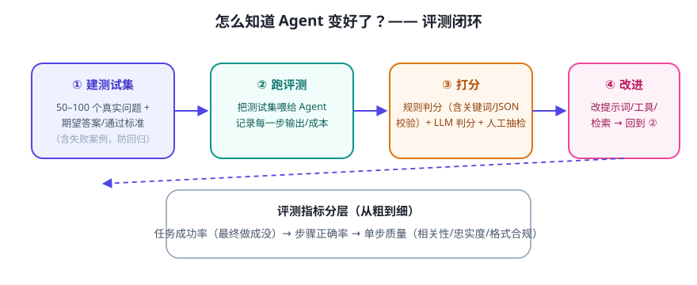

Agent 是概率系统：改一个提示词，可能修好 A 问题却弄坏 B 问题。没有评测，你根本不知道是变好还是变坏。评测 = 给 Agent 建立“考试制度”。
评测闭环

测试集怎么建
- 从真实使用中收集：把你和用户问过的问题记下来，这是最宝贵的种子。
- 覆盖三类：正常任务、边界任务（问得很怪/信息不全）、失败案例（之前答错的，防止复发）。
- 写“通过标准”：不一定写完整答案，可写检查点（“必须包含 3 个价格对比”“必须给出来源”）。
- 数量起步：30–50 条就能开始，重在持续补充，而不是一步到位。
打分方式（由轻到重）
| 方式 | 适合 | 注意 |
|---|---|---|
| 规则判分 | 有明确格式/关键词（JSON 合法、包含某字段） | 写起来快，但测不了“好不好” |
| LLM 判分 | 主观质量（相关性、是否忠实于资料） | 用强模型当裁判；注意裁判自身偏差 |
| 人工抽检 | 重要场景、最终把关 | 贵，用于抽检而非全量 |
Agent 特有的评测难点
- 多步任务成败：不只评“最终回答”，还要看步骤对不对（有没有调错工具、传错参数）。
- 非确定性：同一个问题跑两次结果不同。重要评测跑多次取平均，或固定随机种子。
- 成本与质量一起评：记录每次的 Token 消耗，别为了 1% 的提升花 3 倍钱。
✍️ 今日练习（约 15 分钟）
- 为你的毕业设计写 10 条测试问题（5 正常 + 3 边界 + 2 历史失败）。
- 给其中 3 条写“通过标准”（检查点式，不是整句答案）。
- 设计一张记录表：问题 / 通过? / 用了几步 / 花费 Token / 失败原因。
📌 今日小结
评测闭环测试集 → 跑分 → 改进 → 回归
测试集来源真实问题 + 边界 + 历史失败案例
打分三档规则（快）· LLM 裁判（省人工）· 人工抽检（准）
Agent 特有评步骤不只看答案 · 应对非确定性 · 成本一起评
明天预告：省钱的学问——Token、缓存与并发，让 Agent 又好又便宜。